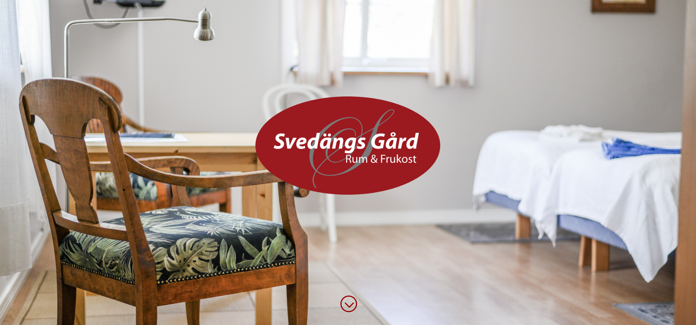
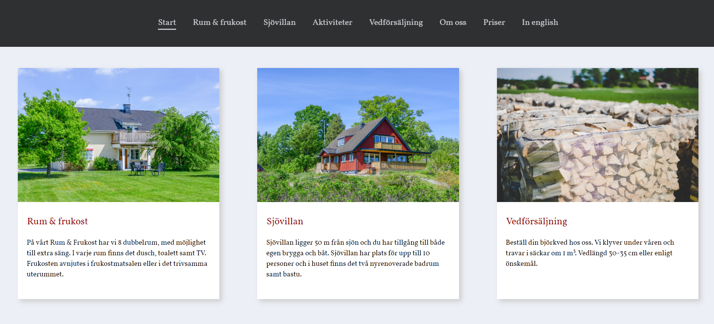
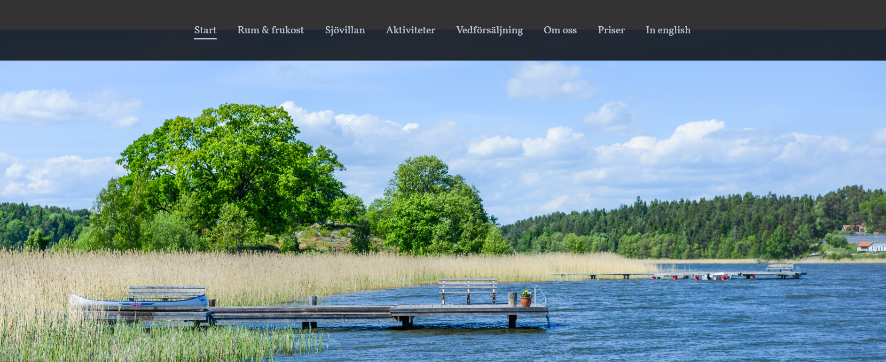

Summary
During the summer of 2017 I created a new website for the B&B Svedängs Gård in Strängnäs, Sweden. I took new photographs of the place and coded a new website from scratch in HTML and CSS with focus on simplicity and easy to find information.
The website was made responsive to appear correct on smaller devices which the B&B didn't have before. With communication with the owners we could determine a simplistic design.
The site can be found here
Images of the site
A fixed front page welcomes the user to the site.
A fixed menu appears when scrolling down on the page.
Lots of images of the surroundings is added to all the pages to get a feeling of the atmosphere at the B&B.